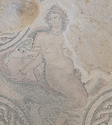
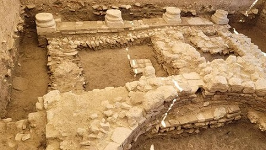

|
VILLA ROMANA DE SALAR
 La villa de localiza en Salar, Granada. Los primeros asentamientos de época íbera se localizan en el Cerro de Gabino. La villa se descubre en el año
2004, durante las obras para la construcción de una estación depuradora
de aguas residuales. En 2006, se realiza la primera excavación. Se ha
podido recuperar un sector de la “pars urbana”. Data del primer cuarto
del siglo I, y es abandonada durante la primera mitad del siglo VI. Destacamos las esculturas de ninfas, la Venus Púdica y la belleza de sus mosaicos.
|
En la quinta fase de excavaciones de la Villa Romana de Salar, en agosto de 2020, se ha descubierto la figura de otro aristócrata, un jinete que es atacado por una leona, en el mosaico de caza en el que el verano pasado ya apareció la representación del que se consideró 'dominus' de la finca. También han aparecido también restos de la estructura de la Villa Romana que precedió en el siglo I a la ya datada en anteriores excavaciones.
En agosto de 2021, descubren los restos de un nuevo patio columnado. El nuevo peristilo con la base de cuatro columnas y restos de muros apunta al acceso a un segundo patio dentro de la zona urbana. Foto: www.abc.es

La campaña arqueológica que, por noveno año, se ha desarrollado este mes de agosto de 2024, ha sacado a la luz nuevos restos en la zona del edificio monumental tardío, entre ellos una columna de fuste completo de tres metros, y un par de hachas, una de ellas de las conocidas como 'dolabras' romanas, que formaban parte de la panoplia militar de la etapa en que se data esta construcción, entre mediados de los siglos V y VI.